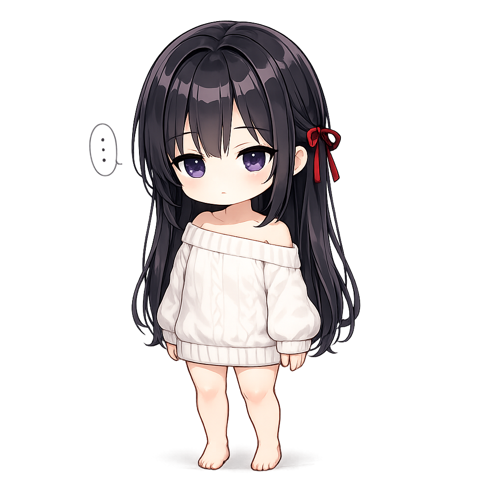

快速开始指南
按照以下5个核心步骤，只需两分钟即可搭建好专属的二游自动化任务调度队列：
请将压缩包完整解压到独立的文件夹中（避免路径含有特殊字符）。切勿单独拖出 exe 运行，以免依赖文件丢失。
双击 Jiansz.exe（或右键选择“以管理员身份运行”），保证调度器拥有充分的窗口与进程监控权限。
使用左上角“文件”菜单导入已有的 json 配置，或点击“添加任务”依次录入各游戏的启动路径、工作目录与参数。
填写对应的游戏窗口关键词（如：原神、鸣潮、Endfield、MuMu），系统将自动识别游戏开闭状态。
简小松将按照设定的队列顺序自动拉起任务、监控进度并在任务完成后顺畅衔接下一项。
界面功能与全景画廊
简小松采用清晰的卡片化交互界面，各功能模块分工明确、一目了然：
支持配置导入、导出，保存当前方案以及一键打开本说明文档。
从当前队列中勾选的任务开始，按顺序自动化调度执行。
临时挂起调度器队列，不主动强杀当前正在运行的游戏或脚本。
停止当前任务流程，并对当前任务执行标准的安全收尾清理。
遇异常死循环时，立即强制清理所有已登记任务的相关前后台进程。
配置全局选项，或在任务跑完后的关机倒计时中一键拦截取消。
常见二游与脚本工具配置速查
点击按钮可直接一键复制推荐关键词与参数到剪贴板，快速粘贴到简小松任务配置中：
鸣潮
ok-ww
原神
--startOneDragon
Endfield
MaaEnd
MuMu
明日方舟
任务配置字段详解
每一行任务代表一个独立的调度单元。合理配置各字段可让任务执行更加健壮稳定：
| 配置字段 | 详细说明 | 最佳实践建议 |
|---|---|---|
| 启用 | 决定该任务是否参与本次队列调度。 | 暂时不需要刷取的游戏取消勾选即可，无需删除。 |
| 脚本名称 | 展示在界面主表格、状态气泡与耗时统计中的别名。 | 建议使用直观清晰的名称，如“鸣潮-日常”、“原神-派遣”。 |
| 脚本路径 | 脚本或启动器程序的绝对或相对文件路径。 | 支持 .exe、.bat、.cmd，包含空格路径已完美支持。 |
| 工作目录 | 程序启动时的工作基准目录（CWD）。 | 建议设置为该脚本所在的主文件夹，防止相对依赖找不到。 |
| 启动参数 | 传递给目标脚本的命令行调用参数。 | 如 BetterGI 的 --startOneDragon，无参数直接留空。 |
| 预计耗时 | 作为超时预警与异常快速退出的基准参考值。 | 建议正常运行几次后，根据耗时统计的均值稍微放宽 3~5 分钟。 |
高级设置与并发策略
高级设置专为复杂的多进程监控、并发调度及自动化确认场景设计：
某些控制台脚本启动后需敲击回车继续，勾选后简小松将在拉起后自动发送确认指令。
可将任务分配至高/中/低并发组，支持多个无资源冲突的日常工具并行刷取。
支持配置“组内全部任务结束才推进”或“关键核心任务结束即推进”。
支持同时填写游戏窗口关键词与进程关键词，双管齐下防止进程游离遗漏。
运行监控与异常判定机制
简小松内建智能判定树，有效防范闪退、卡死与误判，并确保发生异常时安全收尾：
| 运行状态 | 底层判断逻辑与可能原因 | 应对与排查方案 |
|---|---|---|
| 正常完成 | 游戏窗口出现并在任务完成后消失连续确认 15 秒。 | 运行完美，自动安全收尾并顺畅切入下一任务。 |
| 快速退出 | 任务刚启动即在极短时间内退出，低于预计耗时下限。 | 检查脚本路径是否写错、是否缺少管理员权限或运行库依赖。 |
| 超时退出 | 任务运行时间超过设定的上限值仍未结束。 | 检查游戏是否掉线卡住、脚本是否死循环，或适当延长预计耗时。 |
| 启动失败 | 操作系统无法拉起目标可执行文件。 | 检查文件是否存在、杀毒软件是否拦截、工作目录配置是否准确。 |
| 窗口未出现 | 脚本进程已启动，但在等待窗口超时时间内目标窗口未被检测到。 | 检查窗口关键词是否拼写正确，或启动器是否停留在更新/登录弹窗。 |
触发超时保护 / 停止执行
│
├─► 1. 尝试优雅通知并结束启动脚本进程 (Script Process)
├─► 2. 检索并结束登记的目标进程关键词 (Target Process Name)
├─► 3. 释放游戏窗口关键词对应的关联 PID (Game Window Handle & PID)
└─► 4. 记录异常报告至 last_abnormal_report.json 并继续下一队列任务夜间挂机与自动关机
非常适合睡前或出门前一键挂机清日常，全部流程结束后自动安全关闭计算机：
所有任务执行完毕后，系统将弹出 60 秒（可配置）关机倒计时弹窗，并伴有提示音与显眼的“取消关机”按钮。
若队列中发生部分脚本超时或报错，系统收尾后仍可按预设策略执行关机，避免整夜电脑高功耗空转。
若临时需要继续使用电脑，只需点击主界面的“取消关机”按钮或关闭倒计时提示窗即可安全拦截。
简小松简小松互动状态系统
简小松内置生动形象的简小松状态反馈，不仅是视觉点缀，更能让你一眼获悉当前挂机全局状态：

推荐标准文件目录结构
为了保证程序、立绘素材与离线文档正常加载，请保持如下的标准目录组织：
Jiansz_v1.0.1/
├─ Jiansz.exe # 简小松主执行程序
├─ config.json # 当前任务与全局运行配置
├─ docs/ # 离线说明文档与界面图
│ ├─ index.html # 本说明文档页面（重要）
│ └─ images/ # 主界面与功能截图
├─ assets/ # 视觉与音效资源包
│ ├─ bg/ # 背景素材
│ ├─ cards/ # UI 卡片背景
│ └─ status_character/ # 简小松各状态立绘 (idle/work/rest/error)
├─ donation/ # 赞助打赏素材
│ └─ wechat_reward.png
├─ logs/ # 历史运行日志与异常报告
└─ runtime_stats/ # 任务耗时统计数据常见问题答疑 (FAQ)
遇到使用疑问时，可在此快速排查解决方法（点击展开问答详情）：
docs/index.html。只要确保本 HTML 文件位于 docs 子文件夹下即可完美解决。
--add-data 参数将 docs 和 assets 打包进去，例如：
pyinstaller main.py --name Jiansz --windowed --add-data "docs;docs" --add-data "assets;assets"支持与赞赏作者
感谢你的支持与喜爱！
简小松完全由作者在业余时间独立开发并开源维护。如果你觉得简小松帮你节省了宝贵的时间，欢迎关注作者的 Bilibili 空间并投币点赞！如果想请简小松喝杯奶茶，也可以扫描右侧赞赏码支持后续迭代~ ✨